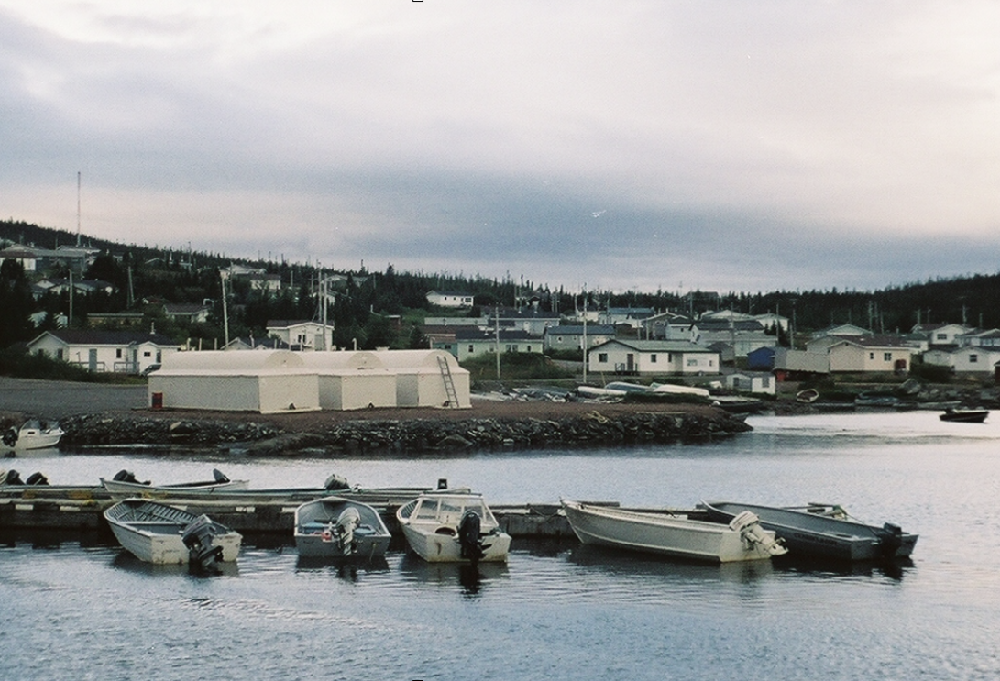
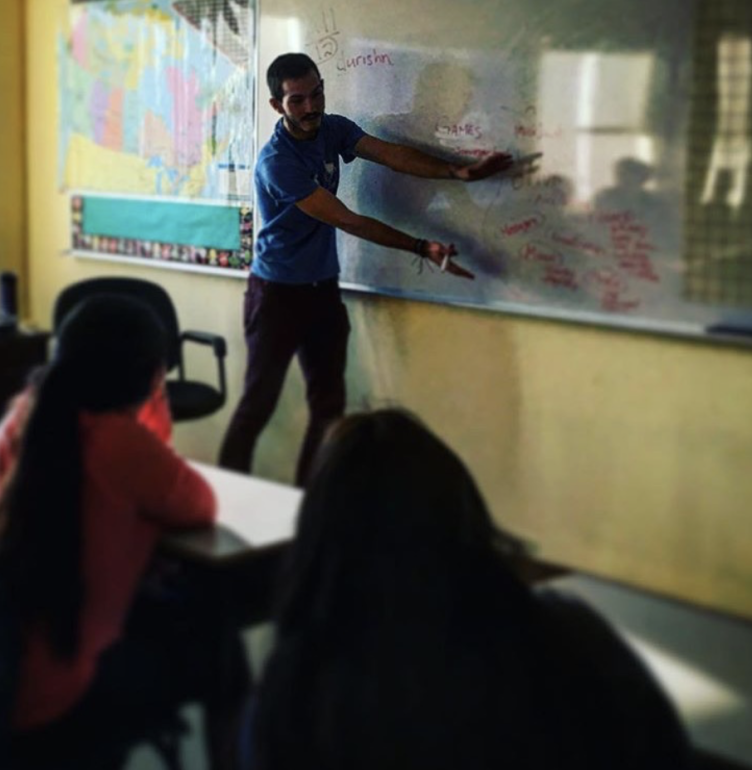

This is a revision of a blogpost that I originally wrote for my advisors blog
- Found Here
Much like my first trip in November, I arrived at the airport at 6:30 in Goose Bay, and sleepily loaded my bags and self into the 19-seater Twin Otter airplane1, headed to Rigolet, Labrador. Unlike my trip in August, however, the skies were dark, the air was cold, my bag was packed with Halloween costumes and candy, and most importantly, I knew where in the world I was going, both figuratively and literally.

Rigolet, Nunatsiavut in the Autumn
If you don’t know already, our small multidisciplinary team is working closely with the community of Rigolet, to design, develop and distribute a community-led health and environmental monitoring application called eNuk. Designed with and by the community of Rigolet, eNuk allows community members to geospatially and categorically track changes in land, environment, and wellbeing that are relevant to them. Users will be able to track thoughts, feelings, photos, videos, audio, and comments, effectively crowd-sourcing their traditional knowledge and stories. Data may be used to; improve safety and efficiency of land use, adapt to climate changes, understand significant environmental and health influences, and provide timely health intervention. To overcome the lack of cellular and poor internet connection in Rigolet, we’ve partnered with Dr Jason Ernst and the RightMesh team, to integrate a mobile ad-hoc mesh network within the application and community. Though the project has been in the works for a few years now, its scope has been consistently expanding as we continue to better understand the niche that the application is attempting to fill. Specifically, the introduction of the mesh network into the application proposes a plethora of new potential features, and of course, problems. That being said, though our timeline has been extended, the goal of the project is more clear and dazzling than ever before.
Exploring the boardwalk - 2017
So where do I fit into the picture, and what brought me to this 19-seater plane? Each team member is involved in almost every step of design & development, however, my focus is on the interactivity of the application; how do we make eNuk not only functional but interesting, fun, and engaging to users? During my trip in August, I had the opportunity of meeting with the team, introducing myself to community-members, understanding where the project has come so far, and understanding where I fit into the timeline. This time I had a more defined agenda; to solve the following question – What is the best strategy for designing an engagement, or gamification2 piece for eNuk?
This question is FAR more nuanced than I had ever imagined. The study of gamification, engagement, and UI design are significant in the computer science domain (I’ll save you the explanation, but think ‘badges’, ‘streaks’, ‘points’, ‘competitions’, etc. ). But that’s just the problem, they are studied through the lens of Computer Science; we need to explore this problem from the context of the community. How can we integrate the most successful and renown engagement strategies from Computer Science and properly tailor them to the needs, traditions, and culture of the community members of Rigolet? This is precisely what was going through my head as we landed in Rigolet at 7:35 am on October 31st.
But first, there were more important matters that needed attending to; Halloween Festivities! What better way to thank the community for welcoming us and leading the research than to suit up in our Research Onesies and do some reverse trick-or-treating. Dan, Jason, Sheri, Jacquie and myself, dressed as a troupe of animals (fictional, extinct, and current), put together what I can only describe as a metric butt tonne of candy bags, and paraded to each house in the community to distribute them.
Left to right: Nic, Jason, Jacquie, and a “metric butt tonne of candy”
Now that the important stuff was out of the way, it was time to get to our research! The next day was spent preparing for our presentation for the Grade 7/8 class at the elementary school and an Open-House for all community members at the new Strathcona building. I had planned on engaging the kids in some computer science related activities, namely building a game using Scratch, then playing with some Hardware on the Raspberry Pi or Arduino. We’d then move on to explaining our project, then getting some ideas from them on their favourite forms of engagement within an application and how they might work in the setting of eNuk. However, much like our project, it seems you can’t design something for an audience that you don’t truly understand, and thankfully, my presentation was more led by the kids, than it was by me.
After meeting the school Principle, Tom, the previous night, he recommended that I instead start the presentation with a brief introduction to myself and my interests, namely, the school bus that I converted into a Tiny Home and travelled the country with a year ago3. We then moved onto our discussion about eNuk.

Learning from the students at Northern Lights Academy.
This is how I thought it would play out: I’d spend most of my time attempting to explain the methods and goals behind eNuk. I’d explain engagement in other applications, such as skill-trees in video games or badges in online education systems, and have them name some examples. Finally, if time permitted, we’d talk about some decent badges that might work in eNuk, like, ‘walk the entire boardwalk’, ‘make a post every-day for a week’, or ‘use eNuk to post a picture’.
This is how it actually played out: The kids listened more attentively than anyone I’ve presented the project to. Why? Because they understood the benefits that the applications could have in their community! I explained engagement, they responded with forms of engagement that my biases had blinded me from; “So, like Snapchat streaks?” Snapchat tracks how many consecutive daily posts a user has made and as it turns out, there is a small competition between pupils in the class, with some pupils posting for over 500 days. When we finally got to potential badge ideas, their imagination truly began to soar. Where I was confined by the lens of Computer Science, they were empowered by their imaginations. They imagined the badges instead as a set of all the things that an individual could do and learn in Rigolet, as a community-passport, for lack of a better term. “Do a Dog Team race!” said one boy, “Catch a salmon!” said another, “Go berry picking!”, “Slide down Dan’s Bank!”, “Sing a song in Inuktitut!”, “Learn grass-weaving!”. I think it’s safe to say, I left that classroom with more answers, questions, and direction than I had when I walked in.
Now armed with the ideas and enthusiasm of the Grade 7/8 classroom, the team and I had an Open House to run. Each member set up their respective booths, explaining some section of the project. Initially, the intent of my booth was to gather a few more badge ideas and have participants draw what a given badge might look like. However, as I explained the results of my visit to the school with community members, their eyes lit up with possibilities – this might not only be a way of engaging kids/users in the application but also their traditional knowledge and skills! We started by writing down some of the ideas that the kids in the school had on post-it notes, then we asked participants to write down things that they thought it was important for kids in the community to learn, and the necessary steps to learn that skill.
Post-its: the beginning of an eNuk engagement piece, by Rigolet, for Rigolet.
Over the course of a couple hours, I ended up with 59 different Rigolet-specific skills in 13 categories such as; Language, Beading, Sewing, Winter Safety, Trapping, Cooking, Hunting, and Tool Making, to name a few. While obviously not a complete and exclusive list, my badge system was beginning to transform into an educational tree; a curriculum for self-learning of traditional knowledge and skills.
Throughout this exercise, there was a looming question in my mind. “Is this really feasible? An application can’t know with reasonable accuracy if a user has completed one of these goals!”. Queue, my saviour – after providing some great post-its, a woman proposed the idea of an individual (or a small handful of people) in the community being associated with each category. That way, people could go to that person to either receive their badge or to learn that skill.
Suddenly the entire engagement piece was flipped on its head. Instead of simply providing some badges for completing a task that eNuk could recognize, we could provide a resource for users to log their journey in understanding traditional knowledge and skills. A way to visualize and compare what a community-member has accomplished and the many things they still can learn from others.
There are a few morals to this story, for those of you who don’t like reading between the lines:
Leave your biases at home.
For something to be tailored to its audience, it needs to designed BY its audience and not FOR them.
Research is better in a onesie.
1 or as my Advisor, Dan would call it, ‘a glorified lawn dart’. I’ll never think of an airplane the same way… 2 if you’ve never heard of gamification, now might be a good time to use that Google-machine. 3 but that’s a story for another blog post.
ENJOYED THIS ARTICLE? SHARE IT WITH OTHERS OR SUBSCRIBE FOR MORE!
Your email will remain private. Easily unsubscribe anytime.